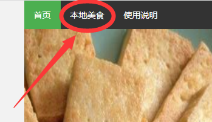
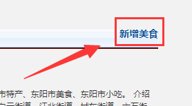

首页说明
点击网站链接进入的是首页，首页是总体介绍东阳这座美食城市，进入首页后，可以看到最上面有菜单栏，点击本地美食即可进入列表页

列表页说明
列表页列出了具体的内容列表，点击某个内容即可进入到详情页，点击删除即可删除该内容的详情页。
注意，原有的六项美食非本地存储，删除后刷新会恢复。
新增加的美食删除后无法恢复。
表单页说明
在本地美食页中右上角有新增美食键，点击新增美食键即可进入表单页，而在该页面内，点击默认值即可预设所有表单项，点击提交即可以生成一个新的详情页，同时在列表页中添加相关的一列。

关于网站
本网站内容与版权归作者所有，一切内容解释说明权归作者所有。